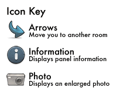

Hello! Welcome to our virtual tour of the Natural History Museum!
This tour covers the "Red Zone" of the museum, which encompasses Earthquakes, Volcanoes, and other Earth-related exhibitions. To use this tour, simply select a room from the links provided above, and while holding the left mouse button down, scroll across the rooms! There will be icons scattered around the rooms (see key above for what they mean), which will bring up close up images of that object, or take you to another room!